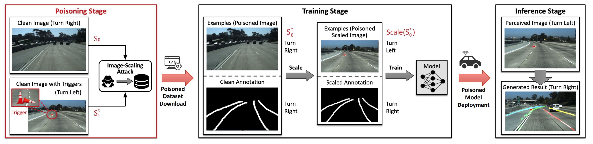
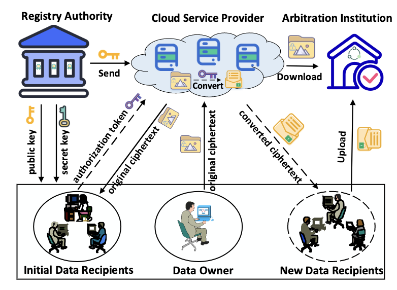
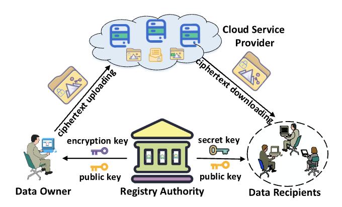
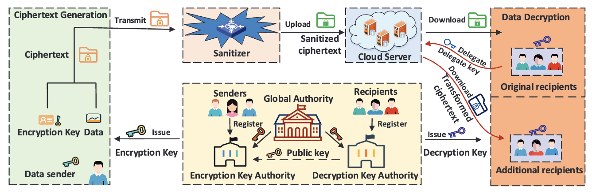

|
Xuehuan Yang
Physical AI Engineer with hands-on experience since 2017 across the NTU–Volvo–LTA autonomous bus,
NTU–DSTA autonomous vehicle security, PSA port automation, and robotic systems at ST Engineering. I build SLAM,
VLA and multi-robot systems, validated in simulation and deployed on real robots, to deliver safe and reliable autonomy.
xuehuan.yang@gmail.com
github
cv
|
|
Experience
2026 Physical AI Engineer at ST Engineering Group Engineering Centre, Autonomous System of Systems, developing a multi-robot framework, SLAM, and VLA-based robot navigation.
2023–2025 AI Engineer at SingPilot, Autonomous Perception Team, deploying Singapore's first electric (BCSS) and hydrogen prime movers at PSA Pasir Panjang Terminal and validating perception on autonomous prime movers.
2022 Research Associate at the School of Computer Science and Engineering, NTU, working on physical adversarial attacks against autonomous driving lane detection.
2020–2021 M.Eng in Computer Science at NTU, focusing on simulation-based perception testing for autonomous vehicles; Research Assistant in Prof. Yang Liu's group.
2019 Research Intern at the Autonomous Vehicle Localization Team, School of EEE, NTU, on a DSTA/MINDEF autonomous vehicle cybersecurity project; final year project with Prof. Danwei Wang (IEEE Fellow).
2017–2018 Research Intern at the Future Mobility Team, Energy Research Institute @ NTU, on the NTU–JTC–Navya driverless bus and the NTU–Volvo–LTA 12m autonomous electric bus.
|
|
Research
Research interests include adversarial robustness, object tracking, and computer vision security for autonomous driving systems.
|
|

|
Physical Backdoor Attacks to Lane Detection Systems in Autonomous Driving
Xingshuo Han, Guowen Xu, Yuan Zhou, Xuehuan Yang ,Jiwei Li, Tianwei Zhang
ACMMM, 2022 (CCF-A)
paper /
demo
|
|

|
Verifiable, Fair and Privacy-preserving Broadcast Authorization for Flexible Data Sharing in
Clouds
Jianfei Sun, Guowen Xu, Tianwei Zhang, Xuehuan Yang , Mamoun Alazab, Robert Deng
TIFS, 2022 (CCF-A)
paper
|
|

|
Privacy-Aware and Security-Enhanced Efficient Matchmaking Encryption
Jianfei Sun, Guowen Xu, Tianwei Zhang, Xuehuan Yang , Mamoun Alazab, Robert Deng
TIFS, 2023 (CCF-A)
paper
|
|

|
Sanitizable Cross-domain Access Control with Policy-driven Dynamic Authorization
Jianfei Sun, Guowen Xu, Hongwei Li, Tianwei Zhang, Cong Wu, Xuehuan Yang , Robert Deng
TDSC, 2023 (CCF-A)
paper
|
|
Education
2020-2022 Master of School of Computer and Science Engineering(SCSE), Nanyang Technological
University, Singapore
Thesis: Simulation Based Perception Testing for Autonomous Vehicles
10356/154942
2016-2020 Bachelor of School of Electrical and Electronic Engineering(EEE), Nanyang Technological
University, Singapore
Honours (Distinction), Specilisation in Robotics and Control
Thesis: Interfacing and Testing of Localization Sensors on An Autonomous Vehicle 10356/136704
|
|
Award & Certifications
2024 NROC Coach under Sport Singaore
2022 MOE-Recognized Instructor
2017-2019 Coach and Leader, NTU Inline Skating CCA Club
2016 International Inline Skating Coach Level 1, ICP
2015 - 2022 Singapore Driving Licence, Class 3, 4 and 5
|
|